High Desert Development
Underground Utilities Portfolio
Explore our underground utility projects from preparation through installation.
Project gallery
Underground utility work
Projects are displayed one after another from top to bottom.
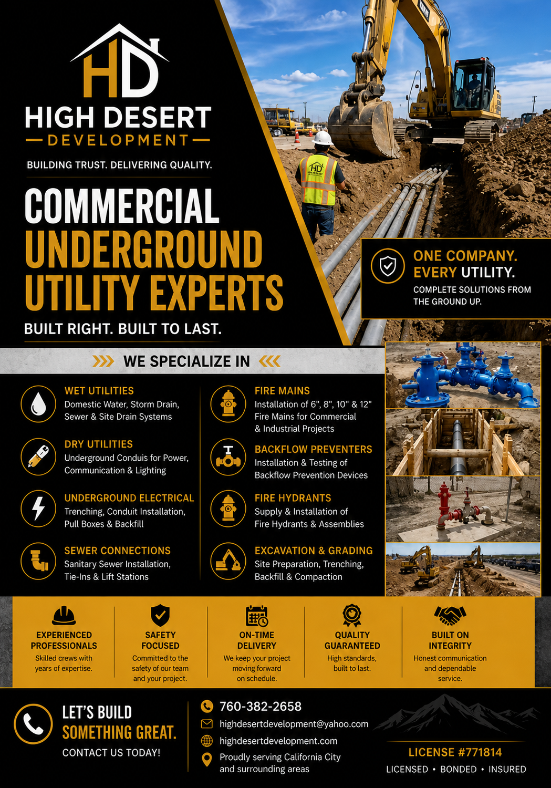
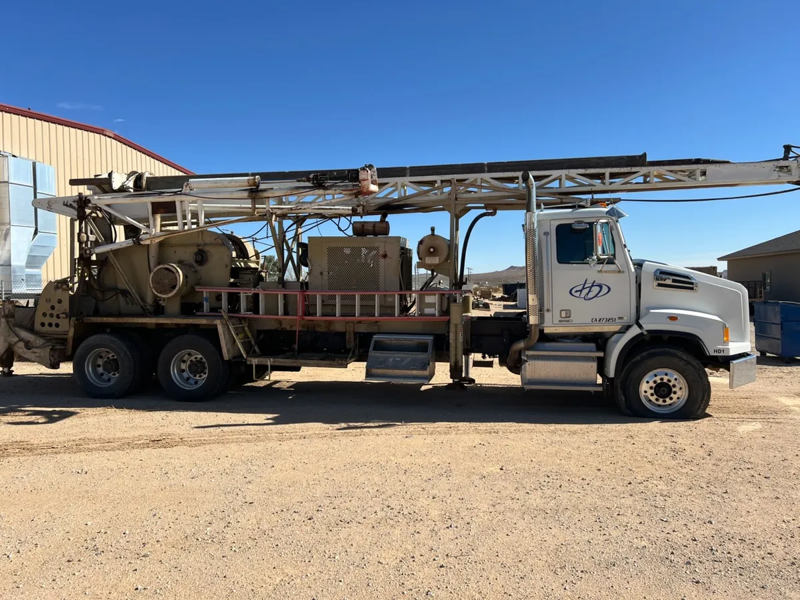
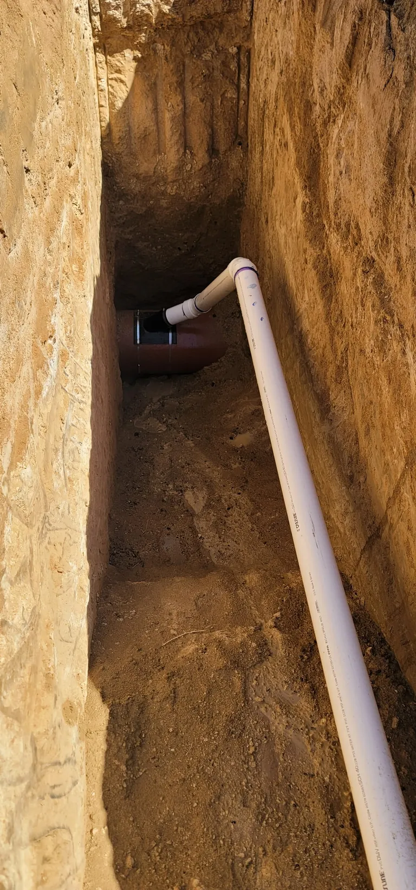
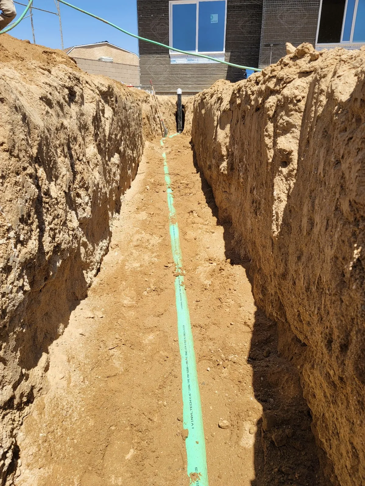
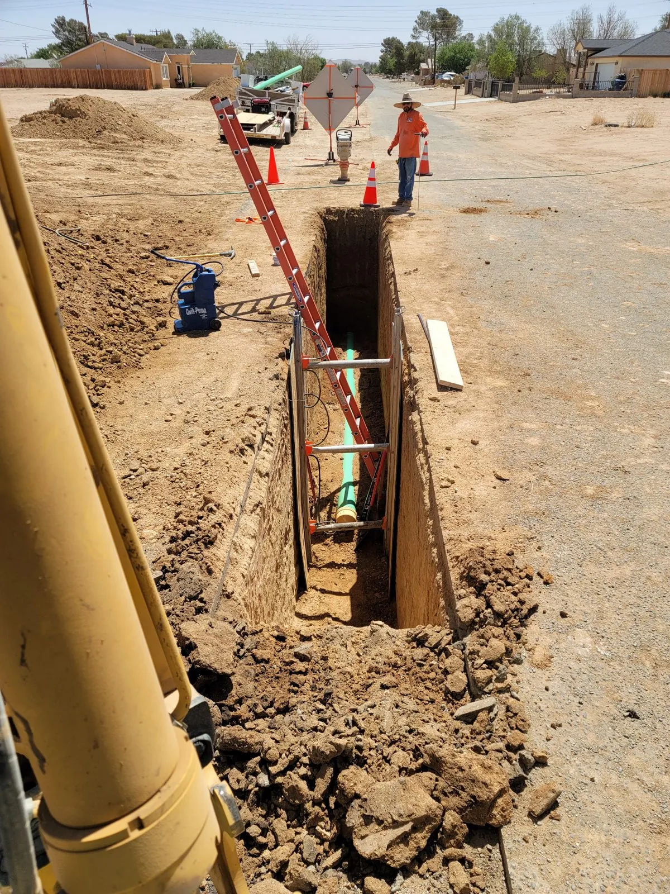
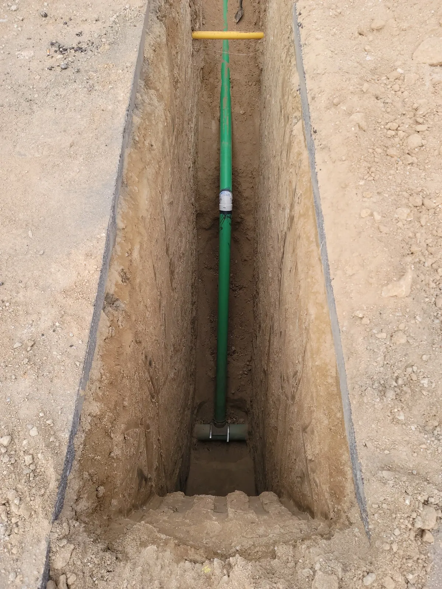
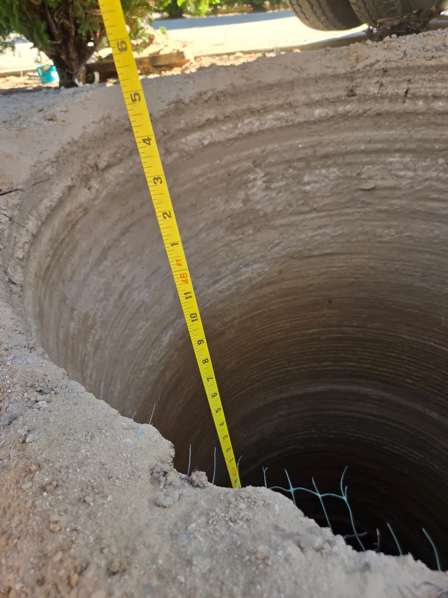
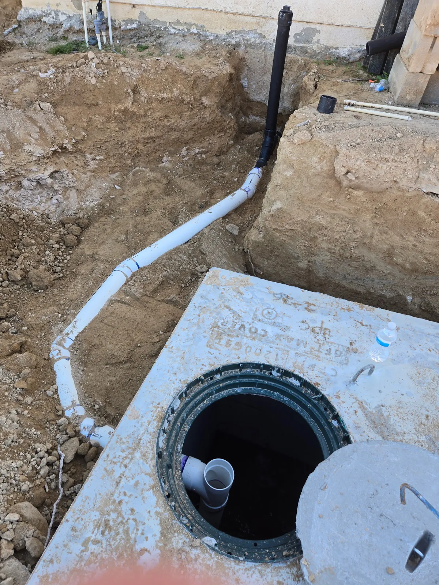
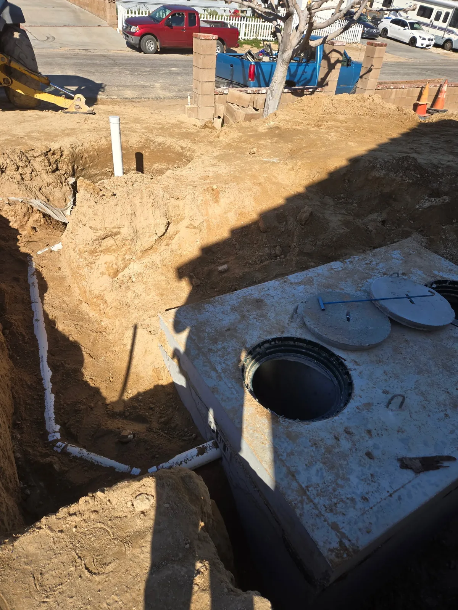
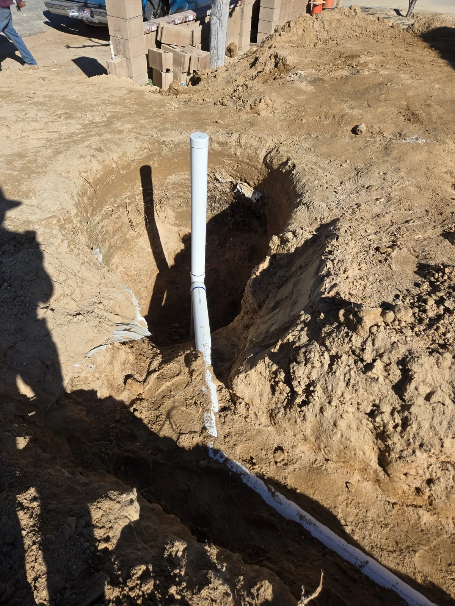
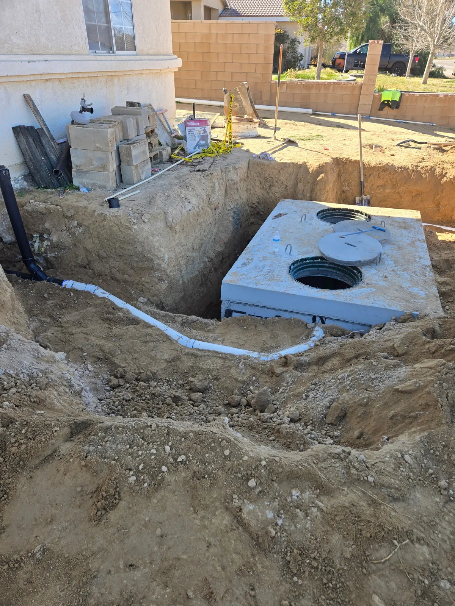
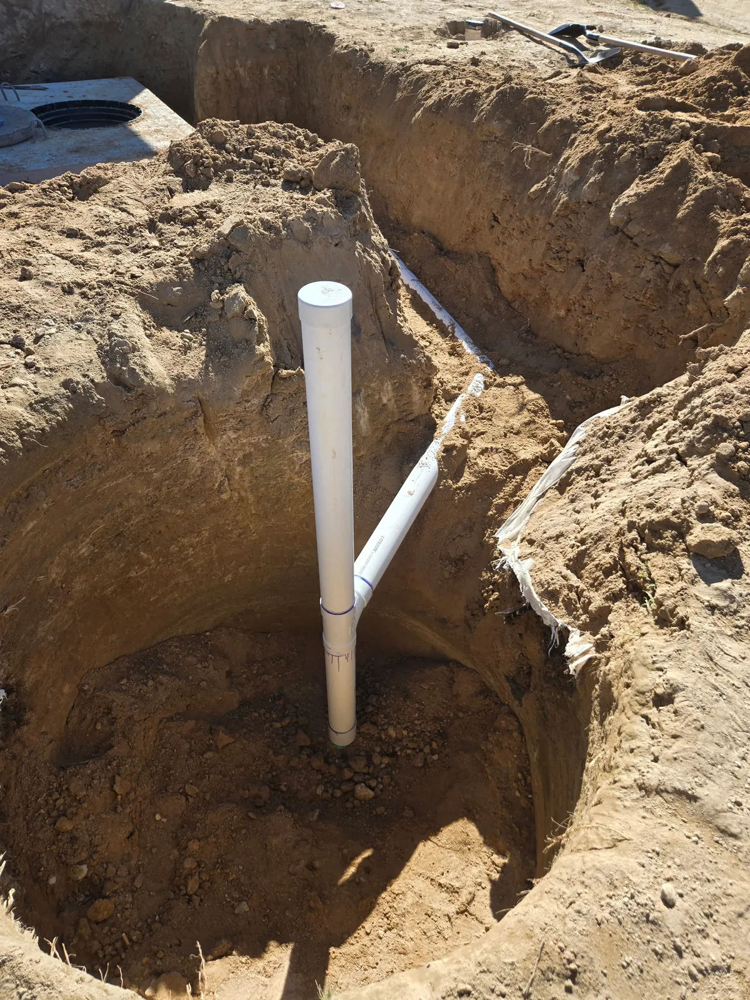